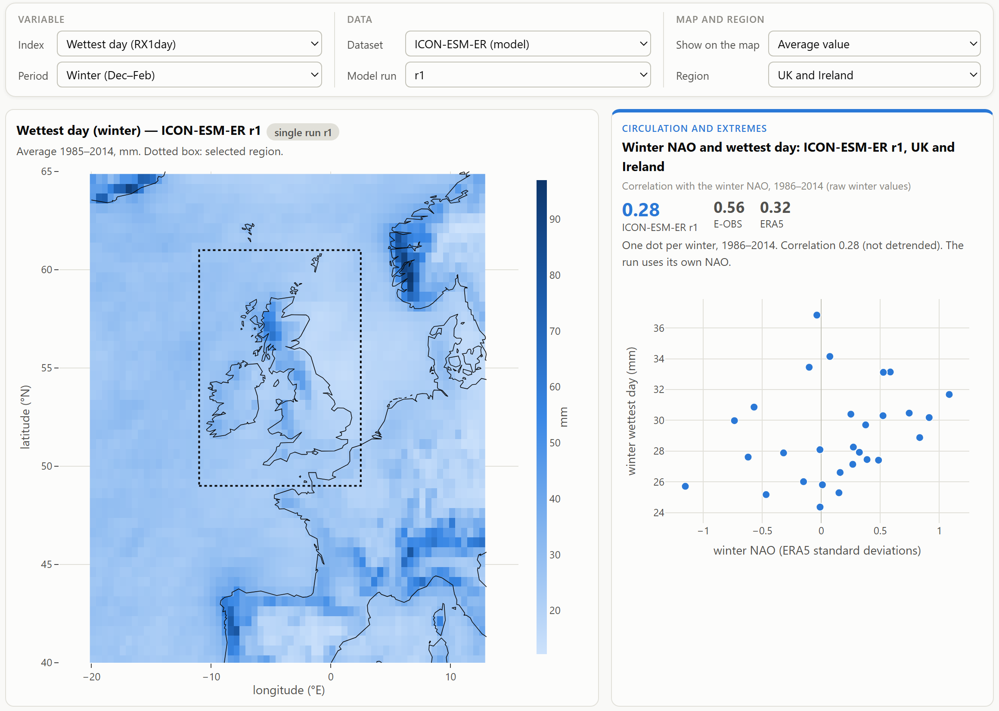
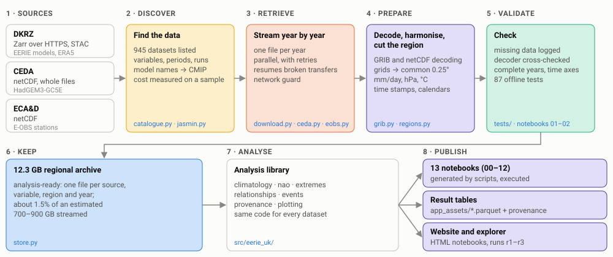

The challenge
Petabyte-scale model archives on several servers, in different formats (Zarr, GRIB, netCDF), on different grids, with different units, time stamps and calendars, to be analysed from one laptop over an ordinary connection.
one day, whole globe: 1–4 MB per variable
→
north-west Europe
30–50 kB per day after cutting and compression
30–50 kB per day after cutting and compression
Data sources
DKRZZarr over HTTPS, STACICON-ESM-ER, IFS-FESOM2-SR (historical, control), IFS atmosphere-only, ERA5
CEDAwhole-file netCDFHadGEM3-GC5E at three coupled resolutions
ECA&DnetCDFE-OBS v33.0e station-based rain and temperature
What is kept: 12.3 GB
Regional cut-outs on disk by source (rounded; total measured). Green: added for the ensemble, control and resolution experiments.
Applications

Interactive explorer (runs r1–r3, 2 MB JSON export); 13 executed notebooks with result tables and provenance records; the scientific evaluation on the companion poster.
End-to-end pipeline

Problems and solutions
StageProblemFix
Discoverunknown cost of each datasetsample, time and size first (110 → 16 GB)
Retrievebroken connections, sleeping laptopone atomic file per year, retries, resume
RetrieveCEDA files up to 1 GB eachstreamed with HTTP range resume, cut, deleted
Retrievemetered networksnetwork guard stops all downloads
PrepareIFS GRIB misread by ecCodessmall decoder, cross-checked twice
Preparereduced Gaussian and shifted gridscommon 0.25° grid
Preparethree rain units, three time stampsmm/day, hPa, °C; one test per rule
PrepareGRIB library crashed in threadslock around decoding only
Validatea month missing on the serverfetched by day, gap recorded
Validatecoastal cells differ by datasetsame land cells everywhere
Built to scale
- Done: three runs per model and control runs through the same code.
- Small change: CMIP6/CMIP7 reader, server-side subsetting, Zarr output.
- Next to the data: one job per year on Levante, JASMIN or LUMI; only results travel.
Software architecture
Data layer
every source → CMIP names and units
catalogue · download · ceda · eobs · grib · regions · storeevery source → CMIP names and units
Analysis
pure functions on xarray, Dask
climatology · nao · extremes · relationships · eventspure functions on xarray, Dask
Presentation
generated, then executed
build_notebook_NN · plotting · build_sitegenerated, then executed
87 tests on GitHub Actions · provenance record per result · methods fixed first · environment.yml
Reproduce in four steps
# 1 environment and offline tests conda env create -f environment.yml pytest # 2 regional cut-outs (resumable) python -m eerie_uk.download --group monthly python -m eerie_uk.ceda --resolution LL MM HH # 3 generate and execute the notebooks scripts/build_all.ps1 # 4 website and explorer python scripts/build_site.py